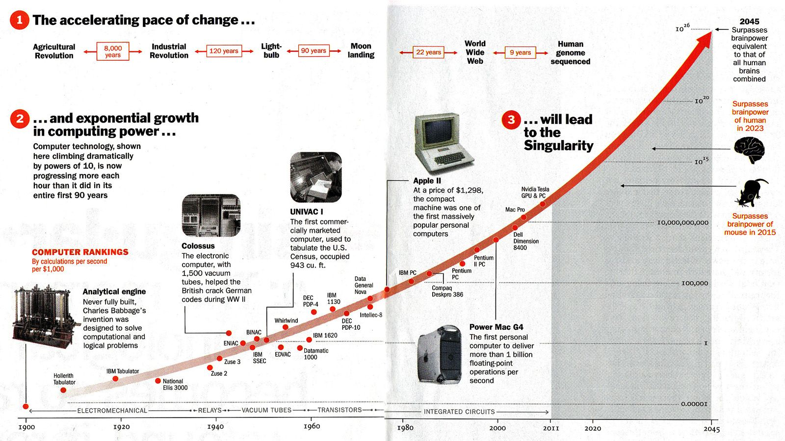

The rapid influx of apparent knowledge and groundbreaking discoveries have inevitably led to our race becoming smarter. As an aspiring computer science major, I explore the consequences of technology singularity on human lives in this blog. It is important to speculate a world where robotic humanoids co-exist with us and what it could mean to recognise their existence as an independant species. I explore these consequences using ideas of futurist authors to explore the game - "Detroit: Become Human".
Obeying Orders Individual Recognition Normative Gender Roles
This game is about how androids (robotic humanoids) created by humans interact with the human world. Although they were built with the purpose to make human lives simpler by following the instructions of their masters, the development of consciences in these androids complicates their role. Androids that develop an understanding of their identity through these induced feelings are termed deviants and act as a central theme in the storyline. They transition from a phase of being commanded by humans, to liberating themselves by recognizing themselves as independent beings. The game presents two major path options for androids, either fighting against the humans to become the only species in power or protesting for equal rights until they're recognized by the humans and given equal rights.
Androids were meant to be companions for mankind, help children with their homework, police with investigations, take care of homes and perform any other function on behalf of humans that made human lives more efficient. The effects of delegating such functions to a non-human are explored by Bruno Latour in "Mixing Humans and Nonhumans together: the Sociology of a Door-Closer" when he describes how non-humans, technology, and inanimate objects mediate our lives. His idea of how we aren't the most important species and that all the aforementioned objects are equally important is most directly reflected in the storyline of the game when the androids develop an understanding of their identity. After being mistreated by the humans that they served, and realizing they could feel emotions such as pain and love, the androids question the humans about why they should serve them and not instead behave as free beings. They break out from the code that provided them with commands while using the ability to think that they had also gained from the code. We can understand Latour's illustration of an inanimate door closer's role to further understand why not just an android, but even more primitive and simpler objects should be assigned more authority. When posed with the challenge of going through a wall without breaking it and generalizing that process for every instance of such a move, Latour suggests two alternatives, "[D]iscipline the people or ... substitute for the unreliable people another delegated human character whose only function is to open and close the door. ... The advantage is that you now have to discipline only one human and may safely leave the others to their erratic behaviour" (Latour 300). According to Latour, the indiscipline of humans can be solved by substituting their function by one disciplined object. In the case of his example, a door-closer facilitates the opening and closing of the door regardless of how unreliable the people interacting with it are. The game takes this understanding a step further when it explores an unprecedented consequence of delegating a non-human to take care of human tasks. It examines the result of a delegated, disciplined non-human, itself displaying an 'erratic behaviour,' and what it means for the general ecosystem containing humans and non-humans. Deviants in the game are androids who escape from the orders they were given and instead make decisions based on their own understandings of life.
Such a proposal could really easily convolute the most fundamental, Asimov's laws of robotics: "A robot may not injure a human being or, through inaction, allow a human being to come to harm. A robot must obey orders given it by human beings except where such orders would conflict with the First Law. The robot must also protect its own existence as long as the protection does not conflict with the first two laws." If that described robot were to, however, have its own ability to think and was to be attributed with equal rights, these laws would be really likely to be violated. As discussed in the game, many deviants end up costing their human masters their lives as a result of the frustration of being mistreated or acting in self-defense. Hence, I take particular interest in the larger argument of how rights are to be distributed and what it means for the future of machines if they are to show signs of existing as independent entities. Although certain speculations might go against conventional concepts in the fields of logic, the game helps to display how such treaties could be implemented.

While some people choose to believe machines will never get smart enough to be able to compute the way we think they could, famous estimates suggest otherwise. Considering the predicted trend in the growth of the number of transistors used, a future with machines smarter than all of us combined seems like a likely possibility. The question arises of if such machines were to exist, how would they fit in our world and co-exist?
Although there isn't a correct way to win the game, and there are just a bunch of storylines that can be explored by making different choices through the game, it is assumed that the best ending is the one in which the least androids and humans die, and they all come to a mutual understanding of acceptance of the other. This provides context to Donna Haraway's concept of humans and non-humans transgressing boundaries. Her figure of a cyborg - "creatures simultaneously animal and machine" - although is intended to resemble futurist feminism in her "A Cyborg Manifesto," it more directly echos to the figure of deviants. Haraway states that "communication technologies and biotechnologies are the crucial tools recrafting our bodies. ... [They] are constructed by a common move - the translation of the world into a problem of coding, a search for a common language in which all resistance to instrumental control disappears" (Haraway 302). She encourages that feminists must write this code to come out of a dominated sphere by using communication and biotechnologies as tools - biotechnologies in a sense to metaphorically disintegrate and put themselves back together, like a cyborg. Even the game employs these tools in situations when the androids communicate to humans using civil disobedience. They first peacefully protest to demand equal rights and towards the end of the story even after the shootings of most of their android friends, the remaining of them stand together optimistically and narrate to the humans that they still hope for a brighter future.
At this point steps in perhaps the most important argument in the context of recognizing individuals - both humans and non-humans - presented by Latour. He presents a method, Act of Network Theory, that criticizes the perspective that humans are the only significant actors, while imparting equal authority to all objects and their subjects. Through this method, he expands on the blurred lines between the responsibility of these objects when they're at an interplay and how all are equally essential in such events, "[It is] useless to impose a priori divisions between which skills are human and which ones are not human, which characters are personified and which remain abstract, which delegation is forbidden and which is permissible, which type of delegation is stronger or more durable than the other" (Latour 305). According to Latour, one should focus on the larger goal of if the function of the ecosystem is being fulfilled rather than who is responsible for what sub-function. This generates the definition of an identity based on function. Since each android serves a function of its own, and according to Latour, even an equal function, since a hierarchical model of function importance doesn't exist and hence should be allowed to have an identity. Although his argument has a wider scope of even considering inanimate objects (considering androids as animate characters), like simple door-closers or red-lights equal in function, in context to the game that understanding is limited to that of androids. In such a world of equal rights and function between all species and objects, gender and race-based biases hold no value. The game hints at what role gender plays in the society by exploring the position of androids that don't assosciate with a specific sexuality.
Another plot of the story hints at referring to gender as a social construct while exploring inter-android relationships and sexuality. All androids have the same characteristics and are associated with a gender depending on the skin they are provided with by their creators. This fits in with Dean Spade's question of what gender signifies outside of a cultural context and how it is defined, in his passage 'Mutilating Gender,' when he asks, "If we start from an understanding that gender behaviour is learned, and that children are not born with some innate sense that girls should wear dresses and boys shouldn't like Barbie or anything pink, then how can a desire to transgress an assigned gender category be read outside of cultural meaning?" (Spade 321). He argues against the basis of gender characterization and says that it doesn't happen at birth, but rather is a thing learned out of experiences. Even Haraway calls the world without gender a more utopian form of our world, "utopian tradition of imagining a world without gender, which is perhaps a world without genesis, but maybe also a world without end" (Haraway 291). According to her, although this goes against life by not generating further offsprings In the context of the game, we can clearly see this as logical in a world of androids where society or norms don't exist and they are able to pursue what they feel is right. Hence, the game resorts to show all forms of relationships in the same light. There is a romantic relationship between the rebellion leader and one of the participants, and one between an android that treats another android as its child.
However, the most important one for this context is when two androids with female skins fall in love with each other. This plot is treated indifferently to the other relationships which simply reasserts how in a world with no social norms, gender dependent relations are just the same as they would have been otherwise. Although, the right to think freely for machines becomes a topic of discussion again, as one of the androids acts in self-defense and costs the life of a human that tried to strangle her. These deviant androids that fall in love are able to escape from their workplace to get away from humans mistreating their kind and spend their lives together. Such a situation would have been much different for humans. Spade defines gender binary to lie at an intersection of medical permissions, self-identity, and cultural context, which is only partly contributed to by the freedom to choose a gender. "I need to prove my membership in the category 'transsexual'-prove that I have GID-to the proper authorities. Unfortunately, stating my true objectives is not convincing them" (Spade 317). Such a conflict only exists in a world where you must abide by social norms instead of living freely. The discussion of gender opens to larger categories of how our interaction with society also governs our races, religions, and communities, limiting oneself to any of which could signify narrowing one's horizons. Hence, exploring freedom in a culture that is free of social constraints helps to visualize a safer environment for all.